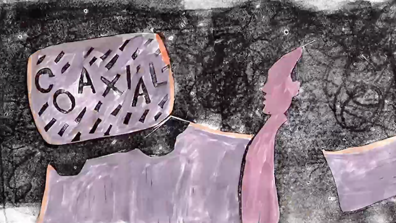
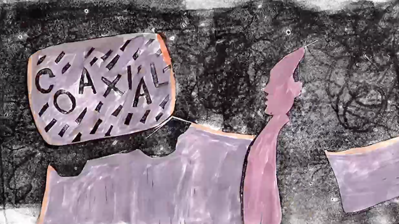

THE BLACK LODGE
Friday, March 26th 7pm PST
The Black Lodge is a monthly intimate gathering and ritual organized around exploring, sharing, and experimenting with diverse forms of elektronic musik and other esoterik arts.
Force Placement @his_gyro_is_gone Resident DJ with The Black Lodge KOSMIK @theblacklodgela Founder and head of The Black Lodge global collective and conspiracy Ole Mic Odd @olemicodd Hardware producer and DJ from Los Angeles Simonowsky @ssimonowsky is a Chicago schooled LA based time mechanic, Black Lodge resident & 50% of Belligerents
Nomadico @yaxteq As a member of Underground Resistance DJ Dex rose through the ranks as a member of Timeline, Los Hermanos and his own solo releases on UR as Nomadico. He’s now fully engaged in growing the catalog of his own Los Angeles based label Yaxteq. He has performed at clubs and festivals all over the U.S., Latin America, Europe and Asia throwing down eclectic sets of gritty, moody, funk fueled and hard hitting electronic music.
@theblacklodgela